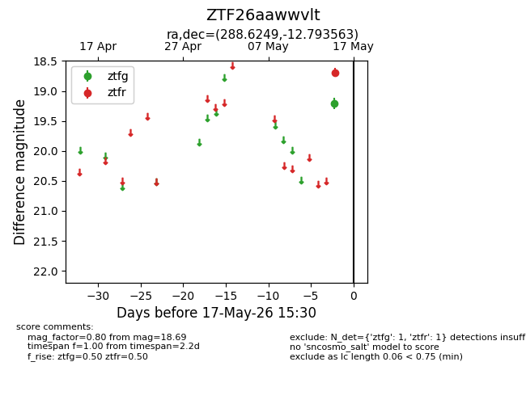
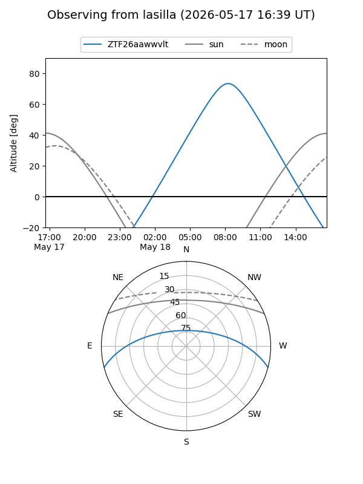
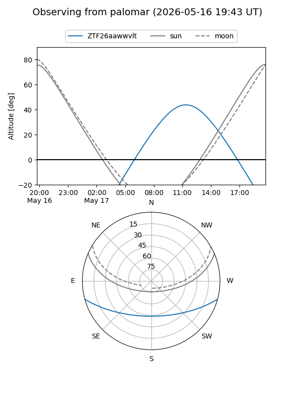

ZTF26aawwvlt
Target ZTF26aawwvlt at 2026-05-17 15:32
Aliases and brokers:
FINK: link
Lasair: link
ALeRCE: link
alt names
ZTF26aawwvlt (ztf,fink_ztf)
Coordinates:
equatorial (ra, dec) = 288.6249,-12.79356
equatorial (HMS+DMS) = 19:14:29.98,-12:47:36.83
galactic (l, b) = (24.0047,-10.84530)
Flags:
Photometry:
last ztfg=19.21, ztfr=18.69
1 ztfg, 1 ztfr detections
Lightcurve

Visibility


Additional plots